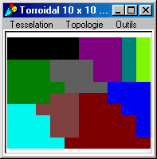
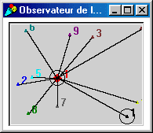
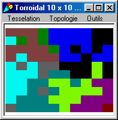
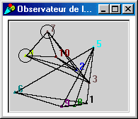

|
PlotsRental
Land regrouping process by plots rentalFrançois Bousquet, Cirad ; Christophe Le Page, Cirad  This model demonstrates the principles of Cormas communicating agents. Communicating agents have a mailbox and use a communicating channel to deliver messages in the mailboxes of the other agents belonging to their social network. In this exercice, 10 "farmer" agents are randomly located on a 10 x 10 spatial grid, each cell standing for a plot of land. Each farmer receives initially 10 plots, randomly chosen. He estimates the productivity of a plot according to its distance. The calculation on his potential income is based on this single criteria. Four ways of organizing the rentals of the plots have been implemented. The first scenario is a bidding process that relies on a centralized contract net protocol. An auctioneer offers all plots to all farmers. These farmers having sent back proposals, the auctioneer selects the best one for each plot and finalizes the rental contract with the sender of the best proposal. The result of this first version of the model is a "perfect" land regrouping process, in the sense that any plot is systematically rent to the closest farmer.The three other scenarios are simulating a decentralized functionning: the exchanges of rental proposals do not go through the auctioneer anymore. Its rather a kind of mutual agreement that the farmers are looking for. In a first case, all the farmers know each others. Each one proposes his plots to the others. Then each one selects the best proposal for each of his plots, and finalizes the rental contracts. The result is the same than for the first scenario: as the information is symetric, the optimal solution is reached.   The second distributed version (third scenario) introduces two groups of five farmers, randomly made. These 2 groups are shown on the window that enable the observation of the communication (right picture): group 1 with agents 1;5;6;9;8 and group 2 with agents 7;3;4;10;2. Now that each agent only knows half of the whole population, a kind a social asymetric of information is introduced. This feature leads to a non-optimal solution, as can be seen on the left picture: famer 2 (deep blue) and farmer 1 (black) have not communicated, therefore their domain are overlapping.A last scenario emphasizes this asymetric of information, by assuming an asynchronous way of communication between the members of each group: as soon as a farmer receives an interesting proposal, he immediatly finalizes the contract without waiting for any other proposal. In this version with social and temporal asymetric of information, the land regrouping process is even less optimized.
|